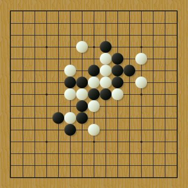

李洪斌老师的题“曲江流饮”
#1 李洪斌老师的题“曲江流饮” 作者：陶涛业余 发表时间：2012-4-11 13:24:00
作为新手，我还处于到处找题做的阶段
这不，李洪斌老师的博客里我看见一道去年的题，他取了个很好听的名字“曲江流饮”好有意境啊，害的我做了好几天才完全做出来。。。
如图，黑先胜

提示：这个题的难度在于黑棋需要先解决白棋右上方的反，解决完，在左下有妙手。
我把答案做成了地毯棋谱供大家参考，没做出来的话千万别看哦
 李洪斌“曲江流饮题解”.rar
李洪斌“曲江流饮题解”.rar
［此帖子已被 陶涛业余 在 2012-4-11 13:26:56 编辑过］
［ 有志青年 于 2012-4-11 16:15:18 时奖励此帖[金币加 100 威望加1］